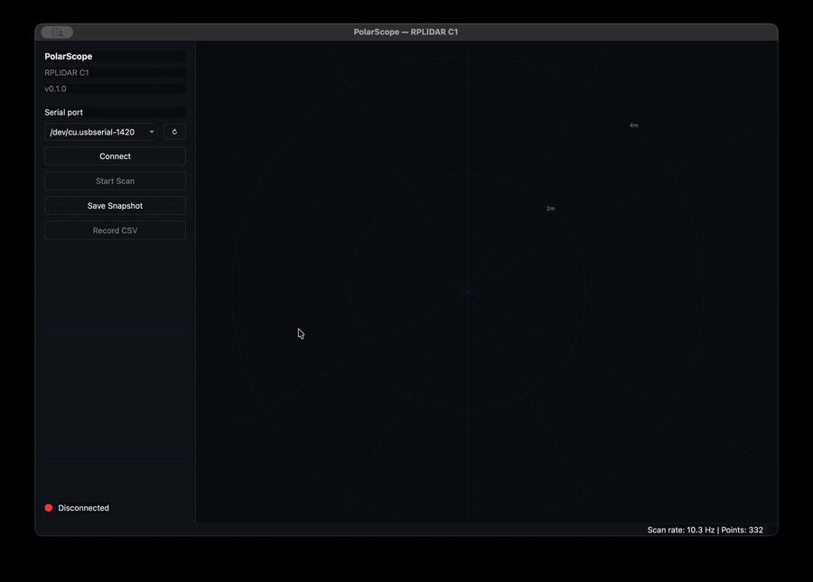
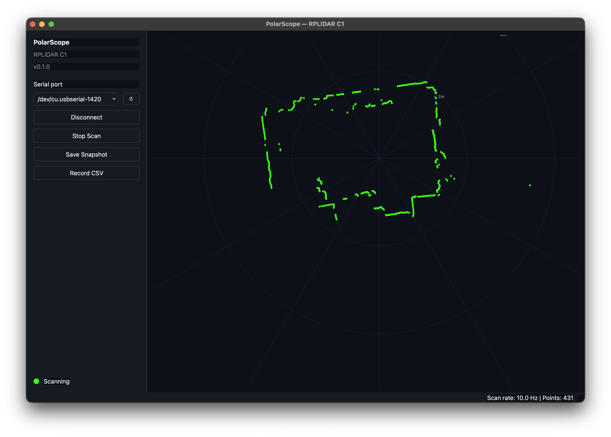

Open source · RPLIDAR C1 · macOS
Live RPLIDAR C1 scans on your Mac.
Sub-200 ms startup, 460 800 baud, zero dropped frames. PySide6 + pyqtgraph.
Unsigned build — first launch needs a Gatekeeper bypass. Release notes.


What you get.
-
Live polar plot
~10 Hz scans rendered in real time with scan-rate and point-count readout.
-
Port auto-discovery
Filters
pyserialenumeration to USB-CDC / CP210x. One click. -
Snapshot PNG
Retina-aware, device-pixel resolution.
-
CSV recording
Per-scan append, blinking REC indicator while active.
-
Range & quality filter
5 cm – 12 m, quality > 0.
-
Background QThread
UI never blocks on serial I/O.
Built like a piece of instrumentation.
Four engineering decisions that make the C1 behave on macOS.
-
lidar/worker.py
We bypass
pyrplidar.scan_generator().The generator aborts on the first short serial read, and the C1 has ~200 ms of startup lag after
SCAN. We read raw 5-byte frames straight offpyserial. -
lidar/worker.py
dsrdtr=Falsere-open on connect.pyrplidaropens the serial with hardware flow control on, which blocks the C1's TX stream. We re-open the underlyingpyserial.Serialwithout it. -
lidar/worker.py
4 s watchdog, no silent reconnect.
First-data delays and transient stalls both raise. Reconnects require an explicit user gesture so hardware issues stay visible.
-
ui/main_window.py
DirectConnection + lock for the recorder.
Record toggles must dispatch mid-scan — a
QueuedConnectioncannot. Cross-thread safety comes fromworker._recorder_lock.
Quick start.
git clone https://github.com/rishimule/polarscope.git
cd polarscope
python3 -m venv .venv
source .venv/bin/activate
pip install -r requirements.txtpython main.pyHardware
- Slamtec RPLIDAR C1 (460 800 baud, USB-C → CP210x UART).
- macOS 11+ ships the Apple-signed CP210x driver — no install.
- Device enumerates as
/dev/cu.usbserial-*.